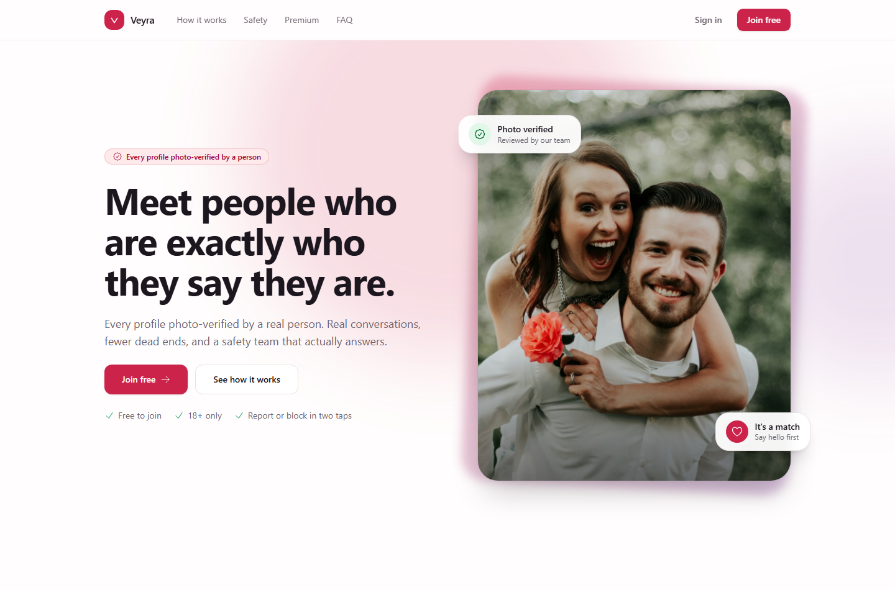
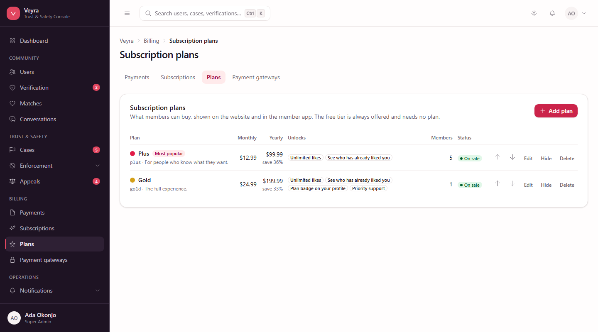

Project overview
Veyra
A dating platform with a trust & safety console at its centre: member apps and a public website on one side, and the tools to verify, moderate, charge and communicate with those members on the other.
- Document
- Project overview
- Audience
- Owners, operators, engineers
- Platform
- Laravel 12 · PHP 8.2 · MySQL
- Status
- Feature complete, pending live keys
1. What Veyra is
Veyra is a complete dating product in three parts that share one database and one set of rules:
- A public website — the marketing pages, pricing and sign-up that a visitor sees first.
- A member app — profile, discovery, matches, messaging, photo verification, safety tools and subscriptions. It runs in the browser today, and the same features are exposed over a REST API for native mobile apps.
- A staff console — the part that makes the other two safe to operate: who is real, who has been reported, what was decided and why, who paid, and what members are being told.
The distinguishing feature is that safety is not an afterthought bolted onto a matching app. Verification queues, aggregated case handling, a graduated enforcement ladder, appeals reviewed by somebody other than the original decider, and an audit trail of every staff action are built into the core, because those are the things that decide whether a dating product survives contact with real users.

2. Who uses it
Seven staff roles ship with the product. They exist because the permissions they hold are genuinely different jobs, and collapsing them would make the audit trail meaningless.
| Role | What they do | Notably cannot |
|---|---|---|
| Super Admin | Everything, including roles and permissions | — |
| Admin | Platform operations: staff, branding, settings, billing, integrations | Read message content, decide appeals, change safety policy |
| T&S Lead | Owns safety policy: enforcement, appeals, risk weights, report categories and reasons | Change billing or branding |
| Senior Moderator | Verification, cases, the full enforcement ladder | Permanent bans by themselves, settings |
| Moderator | Day-to-day cases and verification | Decide appeals — so an appeal always has an independent reviewer |
| Support | Answers members: sees personal details, payments, can give a plan | Enforcement, message content |
| Analyst | Read-only analytics | See personal details or revenue |
Admin and T&S Lead are deliberately separate. One runs the platform, the other owns what counts as a ban. If the same person did both, "who approved this policy change?" would have one answer for every question.
3. What is included
| Area | What it covers |
|---|---|
| Dashboard & analytics | Sign-up funnel, matching health, gender balance by city, safety trends, retention split by verified status |
| Members | Search and twelve filters, full member record, photos, matches, reports, enforcement history, devices, timeline, billing |
| Photo verification | Risk-sorted queue with SLA pills, selfie-versus-profile comparison, automatic signals, enumerated rejection reasons, a separate restricted queue for suspected minors |
| Reports & cases | Reports aggregated into one case per subject, evidence in context, reporter credibility, graduated enforcement decisions |
| Enforcement | Warn, feature limit, shadow ban, suspend, permanent ban, device ban — each with a reason code, policy clause and a member-facing statement |
| Appeals | A queue of their own, assigned to somebody other than the original decider |
| Conversations | Metadata by default; revealing content needs a permission, a written justification, and is logged |
| Billing | Payments, subscriptions, plans and gateways — buying online or granted by staff |
| Notifications | Push campaigns, editable templates, delivery logs, renewal reminders, Firebase and SMS setup |
| Masters | Interests, profile questions, report categories, enforcement reasons, countries, states and cities |
| Administration | Staff accounts, roles and a permission matrix, an immutable audit log |
| Settings | Branding and white-labelling, product and safety thresholds, mail, delivery logs, database backup |
| REST API | Around sixty endpoints for the mobile apps, sharing the same services as the web member app |
4. What members see
The console exists to serve the product below. Everything on these screens is driven by the same data an operator edits: the plans, the prompts, the interests, the report categories and the branding.



The same features are available to native apps over the REST API, which shares the services the web app uses — so a rule changed in the console applies identically on both.
5. How it is built
The stack
| Layer | Choice | Why |
|---|---|---|
| Framework | Laravel 12 on PHP 8.2 | Runs on ordinary shared or VPS hosting, including XAMPP for development |
| Interface | Livewire 3 with Alpine | Server-rendered screens that behave like an application, without a separate front-end build to maintain |
| Styling | Tailwind v4 with design tokens | One colour changes the whole product, which is what makes white-labelling possible |
| Database | MySQL 8 | Real schema, migrations, foreign keys — no document store to reconcile |
| Auth | Session for staff and members, Sanctum tokens for the API | Staff and members are separate guards and separate tables |
| Charts | ApexCharts | Re-themes with the console instead of shipping a second palette |
How the code is organised
app/
Actions/ one job each: apply enforcement, decide a verification, decide an appeal
Enums/ account status, severity, ladder step, reason codes, risk bands
Livewire/ one class per screen, grouped by area (Users, Cases, Billing, Masters…)
Models/ the database, with the rules that must always hold
Services/ the domain: Risk, Moderation, Members, Payments, Push, Sms, Notifications
Support/ Branding, Currency, Masters, PushSettings, Navigation
Http/ controllers for the API, webhooks and the few plain endpoints
resources/views/
components/ui about forty primitives every screen is built from
components/veyra risk badges, status badges, SLA pills, the enforcement dialog
livewire/ one view per screen
routes/ web.php · admin.php · api.php · console.php (the scheduler)
tests/ Feature tests plus acceptance suites that run against seeded dataAnything that changes the state of a member — a ban, a verification decision, a plan, a payment — goes through a service or an action, never straight from a screen. That is why the web app, the mobile API and an automated rule can all take the same decision and produce the same audit trail.
6. The data model
Two user tables, deliberately. users is staff, with roles and permissions. app_users is members,
with swipes, matches and photos. They share almost nothing, and one table with a flag would have given every staff account a
matching history and every member a role.
| Group | Main tables |
|---|---|
| Staff | users, spatie roles and permissions, activity_logs |
| Members | app_users, profiles, preferences, photos, interests, devices, push_tokens |
| Matching | swipes, matches, conversations, messages, blocks |
| Verification | verifications, verification_signals |
| Safety | reports, report_cases, moderation_actions, bans, appeals, risk_scores, risk_factors |
| Billing | plans, subscriptions, orders, gateway_events, payment_logs |
| Communication | notification_templates, push_campaigns, push_logs, email_logs, sms_logs, phone_verifications |
| Masters | report_category_settings, reason_code_settings, profile_options, countries, states, cities, settings |
Rules the database keeps
- A match always stores the lower member id first, so a pair can never appear twice.
- Moderation actions are append-only: they cannot be edited or deleted, only reversed by a later action that links back.
- Every shadow ban carries a review date. A silent, permanent throttle is the failure mode this product designs out.
- An appeal can never be assigned to the person who made the original decision.
- A member has one active subscription at a time; a payment is fulfilled exactly once however many times it is confirmed.
7. Decisions that shape the product
Cases, not reports
Five people reporting the same profile produce one case, not five tickets. Staff act once, and the decision resolves every report behind it. Without this, the queue length measures how organised a pile-on was rather than how much work there is.

Message privacy by construction
Conversation screens show metadata only. Message bodies are hidden at the model level, so they cannot leak into a page by accident. Revealing content requires a specific permission, a written justification, and writes two records: one in the message-access log and one in the audit trail.
Everything a member reads is editable
Report categories, enforcement reasons, the statement of reasons sent with a decision, profile questions, interests and plan wording all live in the database and are edited in the console. The keys behind them stay in code, because routing and risk depend on them — but nobody needs a developer to change a sentence a member will read.
Plans are features, not names
A plan unlocks capabilities by ticking boxes: unlimited likes, seeing who liked you, a profile badge, priority support. The application asks "does this member's plan include unlimited likes?", never "is this member on Gold?". A new plan is therefore a row, not a release.

8. Subscriptions and payments
There are two ways onto a plan, and both leave the same record:
- Members buy online through Stripe or Razorpay. Whichever gateways are switched on are what members are offered; with more than one, they choose at the point of paying.
- Staff grant a plan from the member's page, for bank transfers, goodwill or support recovery.
How a payment is trusted
- The member picks a plan and period. An order is created and they are sent to the gateway's own hosted page — no card details ever reach this server.
- They come back. The return page asks the gateway directly what happened, because a browser can be closed, altered, or never come back at all.
- The gateway's webhook arrives, signature-checked, and is recorded before it is acted on.
- Fulfilment locks the order, so the return page and two webhook retries still produce exactly one subscription and one charge's worth of time.
Paying before the current period ends adds to the time left rather than replacing it. Paying a week early should not cost a week.
9. Notifications and messaging
| Channel | Used for | Needs |
|---|---|---|
| Push (Firebase) | Matches, messages, campaigns, renewal warnings | A Firebase service account; a VAPID key as well for browsers |
| Email (SMTP) | Password resets, staff invitations, renewal warnings, plan notices | SMTP details |
| SMS | Phone verification codes | Twilio, MSG91, Vonage or Textlocal |
| In-app | Enforcement notices — the statement of reasons | Nothing |
Campaigns are sent by the server on a schedule, not by the browser: approving one queues it, and a campaign to fifty thousand people cannot depend on an operator leaving a tab open. Every recipient gets a delivery-log row, including members with no device registered, so the totals add up to the audience rather than quietly shrinking.
Renewal warnings ride on the same machinery: push at seven, three and one day before a plan ends, email at three days, and an email on the day it ends. The schedule is editable, and each reminder is recorded so it is never sent twice.
10. Security and privacy
| Area | How it is handled |
|---|---|
| Access control | Around seventy-five permissions grouped into roles; every route carries the permission it needs, and the sidebar hides what a person cannot open |
| Credentials | Gateway keys, SMTP passwords and the Firebase service account are encrypted at rest and write-only from the console — saved, never shown again |
| Personal data | Emails and phone numbers are behind their own permission, so an analyst never sees them |
| Message content | Hidden by default, permission-gated, justified and logged when revealed |
| Audit | Every staff action is recorded with actor, role, before and after values; sensitive actions are flagged; the log cannot be edited |
| Webhooks | Signature-verified against the raw request body, with a five-minute replay window for Stripe |
| Rate limits | Sign-in, OTP, swipes, messages, uploads and reports are all limited; accounts under a day old get half the swipe and message allowance |
| API responses | Every response goes through a resource class, so internal notes, risk scores and coordinates cannot leak. A shadow-banned member's own API responses say "active" |
11. Running it
The scheduler
One entry drives everything the clock owns — expiring restrictions and plans, renewal warnings, campaign sending:
* * * * * cd /path/to/veyra && php artisan schedule:run >> /dev/null 2>&1On Windows the same command runs as a Task Scheduler task every minute. Without it the product still works — suspensions clear themselves the next time a member loads a page — but nothing else ends on time.
What an operator can see
- Delivery logs for email, SMS, payments and member sign-ins.
- Push delivery per campaign and per member.
- Payments with totals, failures and a "check gateway" button for anything stuck.
- Audit log for every staff action, with a before-and-after view.
- Database backup on demand from the console.
12. Quality and testing
The suite covers the paths where being wrong is expensive: who can see what, what a payment does, what happens when a webhook arrives twice, and whether a restriction ends on time.
| Suite | Covers |
|---|---|
| Feature tests | Masters, billing, checkout, push and reminders, campaigns and SMS, states, branding, enforcement, the API |
| Acceptance tests | Full flows against the seeded dataset: staff sign-in and roles, verification, cases, appeals, member sign-up, swiping, messaging, reporting |
| Invariant checks | Run against the real database: no match stored backwards, no shadow ban without a review date, no appeal judged by its own decider |
Code style is enforced with Pint, and the demo dataset is reproducible: the same seed produces the same members, matches and cases every time, so a screenshot taken today matches the product tomorrow.
13. What is needed to go live
| Item | Where it comes from | Without it |
|---|---|---|
| SMTP details | Your mail provider | Password resets and staff invitations are written to the log instead of sent |
| Firebase service account | Firebase console → Service accounts | No push notifications, and campaigns do not leave the building |
| Firebase web config + VAPID key | Firebase console → Cloud Messaging | Browser notifications cannot be offered |
| Stripe or Razorpay keys | The gateway's dashboard | Members cannot buy a plan; staff can still grant one |
| Webhook secrets | Registered against the address shown on the gateway screen | Payments only confirm when the member returns, never in the background |
| SMS keys | Twilio, MSG91, Vonage or Textlocal | No phone verification |
| Scheduler entry | Your server's cron or Task Scheduler | Nothing expires, warns or sends on time |
| HTTPS domain | Your hosting | Webhooks and browser notifications will not work at all |
| Legal pages and branding | Your lawyer and your designer | The product ships with template wording and demo photography |
Make one real payment with live keys and confirm it appears under Billing → Payments. Replace the demo photography and have the legal pages reviewed. Both are template content, and both are visible to every visitor.
14. What is deliberately not built
Stated plainly, so nobody discovers it late:
- Face matching and liveness are simulated. The schema stores match scores, liveness results and duplicate-face counts, and the review screen treats them as real signals — but nothing computes them from pixels. The service behind them is an interface, so a provider drops in without touching the queue.
- Native mobile apps are not included. The API they need is, and the member web app exercises it.
- Subscriptions are one-time payments that expire, not auto-renewing mandates. Members are warned before they lapse and pay again. Recurring billing is a later addition, not a rewrite.
- Refunds are not processed from the console. A refund is issued in the gateway's dashboard, and the plan is removed from the member's page.
- Message bodies are stored unencrypted. They are protected by permission, justification and logging. Encrypting them would break the flagged-content pipeline and search, and is much cheaper to decide before the table is large.